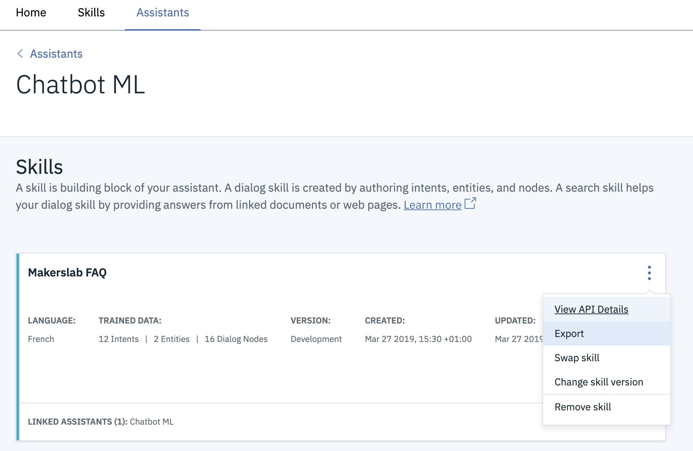

Intro to chatbot with IBM Watson Assistant
Are you ready to create you first chatbot? In this module, you will use IBM Watson Assistant to create your own conversational agent. Chatbots are a great way to add interactivity to a website or app. It enables you to automatically answers frequently asked questions, and sometimes it can be your salesperson!
Quiz
Quiz
Watch the video above first, then answer the quiz to make sure you understand the main notions. Some questions may need to look up elsewhere through a quick Internet search!
This quiz is mandatory. You can answer this quiz as many times as you want, only your best score will be taken into account. Simply reload the page to get a new quiz.
The due date has expired. You can no longer answer this quiz.
Assignment
Make it happen!
This assignment is mandatory. If you update your work but the link doesn't change, you don't need to re-submit it.
Tools
IBM Cloud is a robust suite of advanced data and AI tools, and deep industry expertise to help you on your journey to the cloud.
Watson Assistant is a tool, part of IBM Cloud, for building conversational interfaces into any application, device, or channel.
Project
- Start by creating an account on IBM Cloud and create a Watson Assistant resource as shown in the video.
- Now create your own chatbot, it should contain at least two entities (excluding system entities) and two intents. You’re free to write it in English or in French! It’s up to you to choose what kind of questions it should be able to answer. Be creative!
- Now create your own chatbot by using entities, intents and the dialog flow. Don't hesitate to use the system entities and intents to detect complex user inputs. Be creative!
For example, you could make:
- a recommendation chatbot for shopping, music, movies, etc.
- a personal assistant that can read a calendar, give the weather, etc.
- a customer support chatbot able to answer frequently asked questions
Keep in mind that when you will be creating a chatbot for an application bigger than this assignment, the most important task is to gather real datas on your future users, what are their most frequently asked questions and how they talk about them.
Resources
- Official IBM documentation of Watson Assistant.
- If you want to reformat some of the datas, as shown in the video with
reformatDateTime(), see the advanced data documentation
Submit
When you’re done, export your chatbot as shown in the picture below:
Then, upload the generated .json file on GitHub Gist as shown in the video below. You will need to be connected to your GitHub account.
The due date has expired. You can no longer submit your work.
Going further
Definitions
- A chatbot, or conversational agent, is a computer program that interacts with users using conversation, via text or audio.
- The Turing Test, is a famous test of a machine ability to show an intelligent behaviour. It is based on the idea that if a human is unable to determine if they are speaking to an human or a computer while speaking to a conversationnal agent, then the agent is deemed "intelligent". Alan Turing himself, gave some limitation to the test and even if nowadays some programs are able to pass the Turing Test, we are still far from Artificial General Intelligence.
Tools
- BotSociety, a tool for creating mockups and video presentations of chatbots. A great tool for testing your UX before implementing it!
- DialogFlow, the Google chatbot framework. It's harder to use than IBM Watson Assistant but much more powerful!
- How to code a chatbot from scratch, if you’re feeling adventurous and want to dig even deeper...
Resources
- UX advices on creating a chatbot, a great tutorial on how to design the user experience of a chatbot.
- Another blog post by SAP, also about chatbots' UX
- Stanford CS230: Chatbot, a lecture from Stanford's Deep Learning course about chatbots and what are the underlying technologies behind them
- Introduction to Chatbots, video series by The Coding Train